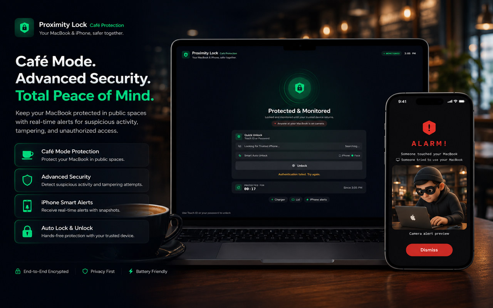

v1.0.8
Latest
July 14, 2026
Auto-Lock & Café Mode: Big Reliability Upgrade

- Auto-Lock now reconnects automatically after Bluetooth is turned off and back on — no need to pair your devices again.
- Added state restoration so protection resumes automatically after your iPhone restarts.
- Café Mode's Protected screen now shows your MacBook's live signal strength and estimated distance.
- You can now disarm Café Mode straight from your Apple Watch or the Home Screen widget.
- Fixed an issue where a stale Bluetooth connection could delay Auto-Lock from activating.
"Thanks for trusting Proximity Lock — pair once, and let Auto-Lock and Café Mode do the rest."